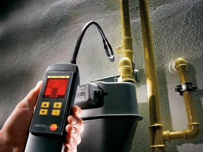

<!DOCTYPE html>
<html lang="fr">

<head>
    <meta charset="utf-8">
    <meta name="viewport" content="width=device-width, initial-scale=1" />
    <meta name="robots" content="index, follow">
    <meta name="description"
        content="Plombier Professionnel dans le Ivry-sur-Seine, nous proposons des services complets : installation, dépannage, débouchage, recherche de fuite et rénovation.">
    <link rel="canonical" href="https://deco-plombier-94.fr/plombier-ivry-sur-seine.html" />
    <link href="style.css" rel="stylesheet">
    <link href="https://fonts.googleapis.com/css2?family=Montserrat:wght@400;600;700&display=swap" rel="stylesheet">
    <title>Plombier Ivry - Débouchage Canalisation Ivry-sur-Seine/title>
        <link rel="icon" type="image/x-icon" href="./favicon.ico">
        <link rel="apple-touch-icon" type="image/png" sizes="96x96" href="./logo/apple-icon-96x96.png">
        <link rel="icon" type="image/png" sizes="32x32" href="./logo/android-icon-32x32.png">
        <link rel="icon" type="image/png" sizes="96x96" href="./logo/android-icon-96x96.png">
        <meta name="msapplication-TileColor" content="#ffffff">
        <meta name="msapplication-TileImage" content="./logo/ms-icon-32x32.png">
        <meta name="msapplication-TileImage" content="./logo/ms-icon-96x96.png">
        <meta name="theme-color" content="#ffffff">
        <script type="application/ld+json">
        {
            "@context": "https://schema.org",
            "@type": "LocalBusiness",
            "name": "Plombier 94",
            "description": "Plombier Professionnel dans le Ivry-sur-Seine, nous proposons des services complets : installation, dépannage, débouchage, recherche de fuite et rénovation.",
            "url": "https://deco-plombier-94.fr/plombier-ivry-sur-seine.html",
            "telephone": "+33761641413",
            "address": {
                "@type": "PostalAddress",
                "streetAddress": "6 rue du Lac",
                "addressLocality": "Saint-Mandé",
                "addressRegion": "Essonne",
                "postalCode": "94160",
                "addressCountry": "FR"
            },
            "image": [
                "https://deco-plombier-94.fr/debouchage-canalisation-wc-1024x682.webp",
                "https://deco-plombier-94.fr/canalisation-percee.webp",
                "https://deco-plombier-94.fr/pose-cumulus.webp",
                "https://deco-plombier-94.fr/installation-wc.webp",
                "https://deco-plombier-94.fr/pompe-de-relevage.webp",
                "https://deco-plombier-94.fr/depannage-urgence.webp"
            ],
            "serviceType": [
            "recherche fuite d eau",
            "detection fuite eau",
            "plombier urgence",
            "sos plombier",
            "chauffe eau electrique",
            "ballon d eau chaude",
            "plombier chauffagiste",
            "chauffagiste autour de moi",
            "douche pour wc",
            "pose wc suspendu",
            "installation wc suspendu",
            "tuyauterie en per",
            "douche exterieur cuivre",
            "prix tuyauterie cuivre",
            "entreprise débouchage canalisation",
            "debouchage evier",
            "débouchage toilette",
            "deboucher wc"
            ],
            "areaServed": {
                "@type": "City",
                "name": "Ivry-sur-Seine"
            }
        }
    </script>
        <link rel="preload" href="hydraulic-design-7689068_1280.webp" as="image">
</head>

<body>
    <header>
        <nav class="plommmmm">
            <a href="https://deco-plombier-94.fr/" class="logo-link">
                
            </a>
            <label for="btn" class="icon">
                <svg viewBox="0 0 100 80" width="40" height="40">
                    <rect width="80" height="11"></rect>
                    <rect y="26" width="80" height="11"></rect>
                    <rect y="52" width="80" height="11"></rect>
                </svg>
            </label>
            <input type="checkbox" id="btn">
            <ul class="plplplplplpl">
                <li class="dededede">
                    <a href="https://deco-plombier-94.fr/" title="Plombier 94">ACCUEIL</a>
                </li>
                <li class="dededede">
                    <a href="https://deco-plombier-94.fr/#prestation" title="plombier chauffagiste Ivry-sur-Seine">NOS
                        SERVICES</a>
                </li>
                <li class="dededede">
                    <a href="assainissement-Ivry-sur-Seine-77.html" title="plombier Ivry-sur-Seine">L'ENTREPRISE</a>
                </li>
                <li class="dededede">
                    <a href="prix-assainissement-Ivry-sur-Seine-77.html" title="devis Plombier 94">DEVIS
                        GRATUIT</a>
                </li>
                <li class="dededede">
                    <a href="tel:+33761641413" title="devis plombier 94 Ivry-sur-Seine">07 61 64 14 13</a>
                </li>
            </ul>
        </nav>
    </header>
    <main>
        <div class="ididididid">
            
            <h1><i>Plombier Ivry - Débouchage Canalisation Ivry-sur-Seine/i></h1>
            <a class="bouton1" href="prix-assainissement-Ivry-sur-Seine-77.html" title="devis plombier 94">DEVIS
                GRATUIT</a>
        </div>
        <div class="formformform">
            <div class="imageimage">
                
            </div>
            <form action="traitement.php" method="post" onsubmit="return validateForm()">
                <label for="name">Nom :</label>
                <input type="text" id="name" name="nom" required>
                <label for="tel">Téléphone :</label>
                <input type="tel" id="tel" name="telephone" required>
                <label for="services">Services :</label>
                <select id="services" name="services" required>
                    <option value="Débouchage">DÉBOUCHAGE</option>
                    <option value="Réparation">RÉPARATION</option>
                    <option value="Chauffage">CHAUFFAGE</option>
                    <option value="Sanitaire">SANITAIRE</option>
                    <option value="Tuyauterie">TUYAUTERIE</option>
                    <option value="Chemisage">CHEMISAGE</option>
                    <option value="Recherche de fuite">RECHERCHE DE FUITE</option>
                    <option value="Urgence">URGENCE</option>
                </select>
                <label for="comments">Commentaires :</label>
                <textarea id="comments" name="commentaires" rows="4"></textarea>
                <button type="submit">ENVOYER</button>
            </form>
        </div>
        <h2 id="prestation">NOS SERVICES</h2>
        <div class="icon-anime">
            <section>
                <div class="icon-item1">
                    
                    <p><strong class="strong-color"><a href="debouchage-canalisation-94-val-de-marne.html"
                                title="debouchage canalisation Ivry-sur-Seine">Débouchage Canalisation à
                                Ivry-sur-Seine</a></strong></p>
                    <h3>Confiez le débouchage de vos canalisations à nos plombiers de proximité à Ivry-sur-Seine. Nous
                        intervenons rapidement pour rétablir le bon écoulement de votre installation, tout en réalisant
                        un diagnostic complet. Une solution durable et efficace.</h3>
                    <a class="bouton3" href="tel:+33761641413" title="debouchage evier Ivry-sur-Seine">CONTACTEZ -
                        NOUS</a>
                </div>
            </section>
            <section>
                <div class="icon-item2">
                    
                    <p><strong class="strong-color"><a href="recherche-de-fuite-94-val-de-marne.html"
                                title="recherche fuite de gaz Ivry-sur-Seine">Réparation Fuite Eau / Gaz à
                                Ivry-sur-Seine</a></strong></p>
                    <h3>Vous constatez une fuite à Ivry-sur-Seine ? Nos spécialistes interviennent rapidement pour
                        localiser et réparer les fuites d’eau ou de gaz, tout en assurant la sécurité de vos
                        installations. Une intervention professionnelle et rassurante.</h3>
                    <a class="bouton3" href="tel:+33761641413" title="fuite deau Ivry-sur-Seine">CONTACTEZ - NOUS</a>
                </div>
            </section>
            <section>
                <div class="icon-item3">
                    
                    <p><strong class="strong-color"><a href="plombier-chauffagiste-94-val-de-marne.html"
                                title="ballon d eau chaude Ivry-sur-Seine">Installation / Réparation Chauffe-eau et Gaz
                                à Ivry-sur-Seine</a></strong></p>
                    <h3>Pour tous vos besoins en chauffe-eau ou chauffage gaz à Ivry-sur-Seine, nos techniciens
                        interviennent rapidement. Installation, réparation ou remplacement : bénéficiez d’un service
                        fiable et conforme aux normes.</h3>
                    <a class="bouton3" href="tel:+33761641413" title="plombier chauffagiste Ivry-sur-Seine">CONTACTEZ -
                        NOUS</a>
                </div>
            </section>
            <section>
                <div class="icon-item4">
                    
                    <p><strong class="strong-color"><a href="renovation-salle-de-bain-94-val-de-marne.html"
                                title="travaux salle de bain Ivry-sur-Seine">Rénovation Complète de Salle de Bain à
                                Ivry-sur-Seine</a></strong></p>
                    <h3>Transformez votre salle de bain à Ivry-sur-Seine avec une rénovation sur mesure : douche à
                        l’italienne, baignoire, robinetterie design, tuyauterie moderne... Un espace fonctionnel et
                        esthétique adapté à vos envies.</h3>
                    <a class="bouton3" href="tel:+33761641413"
                        title="prix pour refaire une salle de bain Ivry-sur-Seine">CONTACTEZ - NOUS</a>
                </div>
            </section>
            <section>
                <div class="icon-item4">
                    
                    <p><strong class="strong-color"><a href="installation-wc-94-val-de-marne.html"
                                title="reparation chasse deau Ivry-sur-Seine">Installation / Réparation WC à
                                Ivry-sur-Seine</a></strong></p>
                    <h3>À Ivry-sur-Seine, nous assurons la pose et la réparation de vos toilettes et chasses d’eau.
                        Blocage, fuite ou panne ? Nos interventions sont rapides et efficaces pour garantir le confort
                        de vos sanitaires.</h3>
                    <a class="bouton3" href="tel:+33761641413" title="installation robinet Ivry-sur-Seine">CONTACTEZ -
                        NOUS</a>
                </div>
            </section>
            <section>
                <div class="icon-item4">
                    
                    <p><strong class="strong-color"><a href="installation-tuyauterie-cuivre-94-val-de-marne.html"
                                title="prix tuyauterie cuivre Ivry-sur-Seine">Création / Réparation Arrivées d'eau à
                                Ivry-sur-Seine</a></strong></p>
                    <h3>Nos plombiers interviennent à Ivry-sur-Seine pour créer ou réparer vos arrivées d’eau, avec une
                        précision maximale. Une alimentation fiable et conforme, que ce soit dans un logement ou un
                        local professionnel.</h3>
                    <a class="bouton3" href="tel:+33761641413" title="douche exterieur cuivre Ivry-sur-Seine">CONTACTEZ
                        - NOUS</a>
                </div>
            </section>
            <section>
                <div class="icon-item4">
                    
                    <p><strong class="strong-color"><a href="recherche-de-fuite-94-val-de-marne.html"
                                title="reparation fuite Ivry-sur-Seine">Recherche de fuite à Ivry-sur-Seine</a></strong>
                    </p>
                    <h3>Localisez l’origine de vos problèmes d’humidité à Ivry-sur-Seine grâce à notre service de
                        détection de fuites. Équipements de pointe, précision maximale et aucune dégradation inutile.
                    </h3>
                    <a class="bouton3" href="tel:+33761641413" title="recherche fuite d eau Ivry-sur-Seine">CONTACTEZ -
                        NOUS</a>
                </div>
            </section>
            <section>
                <div class="icon-item4">
                    
                    <p><strong class="strong-color"><a href="plombier-urgence-94-val-de-marne.html"
                                title="débouchage canalisation urgence Ivry-sur-Seine">Plombier Urgence à
                                Ivry-sur-Seine</a></strong></p>
                    <h3>Un problème de plomberie à Ivry-sur-Seine ? Nous intervenons 7j/7 pour toute urgence :
                        canalisation bouchée, fuite, chauffe-eau en panne. Intervention rapide, propre et efficace à
                        toute heure.</h3>
                    <a class="bouton3" href="tel:+33761641413" title="sos plombier Ivry-sur-Seine">CONTACTEZ - NOUS</a>
                </div>
            </section>
        </div>
        <section>
            <div class="pcserviceindex">
                
                <div class="pcservtext">
                    <p><a href="debouchage-canalisation-94-val-de-marne.html"
                            title="debouchage evier Ivry-sur-Seine"><strong>Débouchage Toilettes, Éviers et Lavabos à
                                Ivry-sur-Seine</strong></a> : Vous rencontrez un problème de canalisation à
                        Ivry-sur-Seine ? Notre équipe spécialisée intervient rapidement pour déboucher vos toilettes,
                        lavabos ou éviers, assurant un écoulement optimal et sans risque de dégâts.</p>
                </div>
            </div>
        </section>
        <section>
            <div class="pcserviceindex2">
                <div class="pcservexexexex2">
                    <p><a href="recherche-de-fuite-94-val-de-marne.html"
                            title="réparation fuite eau et gaz Ivry-sur-Seine"><strong>Réparation de Fuite d’Eau / Gaz à
                                Ivry-sur-Seine</strong></a> : Une fuite d’eau ou de gaz à Ivry-sur-Seine ? Nos plombiers
                        expérimentés se déplacent rapidement pour localiser et réparer les fuites. Votre sécurité et la
                        préservation de vos installations sont notre priorité.</p>
                </div>
                
            </div>
        </section>
        <section>
            <div class="pcserviceindex">
                
                <div class="pcservtext">
                    <p><a href="plombier-chauffagiste-94-val-de-marne.html"
                            title="plombier chauffagiste Ivry-sur-Seine"><strong>Installation / Réparation Chauffe-eau
                                et Gaz à Ivry-sur-Seine</strong></a> : À Ivry-sur-Seine, nos chauffagistes qualifiés
                        vous garantissent des interventions rapides pour l’installation ou la réparation de vos
                        chauffe-eau et systèmes gaz, avec un service conforme et sécurisé.</p>
                </div>
            </div>
        </section>

        <section>
            <div class="pcserviceindex2">
                <div class="pcservexexexex2">
                    <p><a href="installation-wc-94-val-de-marne.html"
                            title="reparation chasse deau Ivry-sur-Seine"><strong>Pose et Réparation de Chasse d’eau à
                                Ivry-sur-Seine</strong></a> : Pour l’installation ou la remise en état de vos WC à
                        Ivry-sur-Seine, faites appel à nos plombiers. Nous assurons un fonctionnement parfait de vos
                        équipements sanitaires grâce à des interventions soignées et durables.</p>
                </div>
                
            </div>
        </section>

        <section>
            <div class="pcserviceindex">
                
                <div class="pcservtext">
                    <p><a href="installation-tuyauterie-cuivre-94-val-de-marne.html"
                            title="prix tuyauterie cuivre Ivry-sur-Seine"><strong>Création / Réparation d’Arrivées d’Eau
                                à Ivry-sur-Seine</strong></a> : À Ivry-sur-Seine, nous intervenons pour créer ou réparer
                        vos arrivées d’eau avec précision. Nos installations sont pensées pour durer, tout en assurant
                        une alimentation fiable pour votre logement ou local professionnel.</p>
                </div>
            </div>
        </section>

        <section>
            <div class="pcserviceindex2">
                <div class="pcservexexexex2">
                    <p><a href="recherche-de-fuite-94-val-de-marne.html"
                            title="detection fuite eau Ivry-sur-Seine"><strong>Recherche de fuite à
                                Ivry-sur-Seine</strong></a> : Nos outils de détection modernes nous permettent de
                        localiser rapidement les fuites invisibles dans vos murs ou sols à Ivry-sur-Seine. Une
                        intervention précise, sans destruction inutile, pour un résultat rapide et propre.</p>
                </div>
                
            </div>
        </section>

        <section>
            <div class="pcserviceindex">
                
                <div class="pcservtext">
                    <p>
                        <a href="renovation-salle-de-bain-94-val-de-marne.html"
                            title="salle de bain rénovation Ivry-sur-Seine">
                            <strong>Rénovation de Salle de Bain à Ivry-sur-Seine</strong>
                        </a> : Offrez une seconde vie à votre salle de bain à Ivry-sur-Seine avec notre service de
                        rénovation sur mesure : douche italienne, baignoire, tuyauterie PER/cuivre, robinetterie
                        moderne… Un résultat esthétique et durable assuré par des professionnels expérimentés.
                    </p>
                </div>
            </div>
        </section>
        <section>
            <div class="pcserviceindex2">
                <div class="pcservexexexex2">
                    <p><a href="plombier-urgence-94-val-de-marne.html"
                            title="plombier urgence Ivry-sur-Seine"><strong>Dépannage Plomberie en Urgence à
                                Ivry-sur-Seine</strong></a> : Une urgence plomberie à Ivry-sur-Seine ? Notre équipe se
                        mobilise 7j/7 pour intervenir rapidement, que ce soit pour une fuite, un bouchon ou une panne
                        sanitaire. Réactivité et efficacité garanties.</p>
                </div>
                
            </div>
        </section>
        <div class="exexexex1">
            <h2>DES SERVICES DE PLOMBERIE FIABLES À IVRY-SUR-SEINE</h2>
            <hr>
            <p>
                Chez <strong>Plombier Ivry-sur-Seine</strong>, nous mettons tout notre savoir-faire au service de vos
                besoins en plomberie, avec professionnalisme et réactivité. Notre équipe intervient à Ivry-sur-Seine
                pour un large éventail de prestations : débouchage de toilettes, lavabos et éviers, réparation de fuites
                d’eau ou de gaz, installation de chauffe-eau, rénovation de sanitaires et bien plus encore.
                Grâce à des équipements modernes et à une expertise pointue, nous garantissons des interventions
                efficaces, soignées et durables, aussi bien en urgence que dans le cadre de travaux planifiés.
            </p>
        </div>
        <section>
            <div id="devis">
                <h2>NOS TARIFS À IVRY-SUR-SEINE</h2>
                <h3>TRANSPARENTS ET COMPÉTITIFS</h3>
                <p>
                    Nos prestations à Ivry-sur-Seine sont proposées à des tarifs justes et sans surprise. Que vous ayez
                    besoin d’un dépannage rapide, d’une installation ou d’un contrat d’entretien, <strong>Plombier
                        Ivry-sur-Seine</strong> vous garantit un excellent rapport qualité-prix avec une totale
                    transparence.
                </p>
                <a class="bouton-devis2" href="prix-assainissement-Ivry-sur-Seine-77.html"
                    title="prix plombier Ivry-sur-Seine">DEVIS GRATUIT</a>
            </div>
        </section>
        <div class="exexexex1">
            <h2>POURQUOI CHOISIR PLOMBIER IVRY-SUR-SEINE POUR VOS TRAVAUX ?</h2>
            <hr>
            <p>
                En faisant appel à <strong>Plombier Ivry-sur-Seine</strong>, vous choisissez une entreprise fiable,
                expérimentée et proche de chez vous. Nos techniciens interviennent dans tout Ivry-sur-Seine pour
                répondre à vos besoins en réparation, installation sanitaire, recherche de fuite ou encore débouchage.
                Notre engagement : un service rapide, propre et de qualité, centré sur la satisfaction de chaque client.
            </p>
        </div>
        <div class="exexexex1">
            <h2>VOTRE PLOMBIER DE CONFIANCE À IVRY-SUR-SEINE</h2>
            <hr>
            <p>
                <strong>Plombier Ivry-sur-Seine</strong> vous accompagne pour tous vos besoins, que vous soyez un
                particulier ou un professionnel. Nous proposons des interventions ponctuelles ou des contrats
                d’entretien adaptés à vos installations. Chaque prestation est réalisée dans le respect des délais, des
                coûts annoncés et des normes en vigueur.
            </p>
            <p>
                Nos services couvrent le débouchage de canalisations, la réparation de fuites, l’installation ou le
                remplacement de chauffe-eau, ainsi que la rénovation complète de salles de bains. Nous assurons aussi la
                mise en conformité de vos arrivées et évacuations d’eau, avec un accompagnement personnalisé à
                Ivry-sur-Seine.
            </p>
            <p>
                <strong>Plombier Ivry-sur-Seine est disponible 24h/24 et 7j/7</strong>, même les week-ends et jours
                fériés. Qu’il s’agisse d’un dépannage urgent ou d’un rendez-vous planifié, nous mettons tout en œuvre
                pour intervenir rapidement et efficacement.
            </p>
        </div>

        <a class="bouton3" href="tel:+33761641413" title="prix debouchage canalisation Ivry-sur-Seine">CONTACTEZ -
            NOUS</a>

        <section>
            <h2 id="nos-valeurs">Plombier Ivry-sur-Seine</h2>
            <div class="valeur">
                <div class="confiance">
                    <h3>QUALITÉ</h3>
                </div>
                <h4>NOTRE ENGAGEMENT POUR DES INTERVENTIONS EXEMPLAIRES</h4>
                <p>
                    À Ivry-sur-Seine, chaque prestation est réalisée avec soin, rigueur et souci du détail. Nous
                    privilégions des matériaux fiables et respectons les normes pour garantir des résultats durables et
                    conformes à vos attentes.
                </p>
            </div>
            <div class="valeur">
                <div class="confiance">
                    <h3>PASSION</h3>
                </div>
                <h4>UN SAVOIR-FAIRE QUE NOUS CULTIVONS CHAQUE JOUR</h4>
                <p>
                    Notre passion pour le métier de plombier se traduit par un engagement total sur chaque intervention
                    à Ivry-sur-Seine. Que ce soit pour une petite réparation ou un projet complet, nous mettons tout
                    notre cœur dans la qualité du travail rendu.
                </p>
            </div>
            <div class="valeur">
                <div class="confiance">
                    <h3>ENGAGEMENT</h3>
                </div>
                <h4>RESPECT DES DÉLAIS, DU BUDGET ET DE VOS BESOINS</h4>
                <p>
                    À Ivry-sur-Seine, notre priorité est de vous offrir un service clair, ponctuel et sans surprise.
                    Nous planifions chaque chantier avec sérieux, pour vous garantir un accompagnement professionnel du
                    début à la fin.
                </p>
            </div>
            <div class="valeur">
                <div class="confiance">
                    <h3>CONFIANCE</h3>
                </div>
                <h4>UNE RELATION BASÉE SUR LA TRANSPARENCE</h4>
                <p>
                    Travailler avec <strong>Plombier Ivry-sur-Seine</strong>, c’est faire le choix d’un prestataire
                    local, à l’écoute, honnête et engagé. Nous instaurons une relation durable avec chaque client,
                    fondée sur la transparence et le respect.
                </p>
            </div>
        </section>
    </main>
    <footer>
        <div id="contact">
            <h5>HORAIRES</h5>
            <p>
                Lundi : 08h - 19h<br>
                Mardi : 08h - 19h<br>
                Mercredi : 08h - 19h<br>
                Jeudi : 08h - 19h<br>
                Vendredi : 08h - 19h<br>
                Samedi : 08h - 19h<br>
                Dimanche : 08h - 19h<br><br>
                Adresse : 6 rue du Lac, 94160 Saint-Mandé
            </p>
            <h5>CONTACTEZ - NOUS</h5>
            <p class="liens">Tel : <a href="tel:+33761641413" target="_blank" title="plombier autour de moi">07 61 64 14
                    13</a></p>
            <p class="liens">E-mail : <a href="mailto:plomb.deco@gmail.com" target="_blank"
                    title="plombier 94">plomb.deco@gmail.com</a></p>

            <div class="liens-wp">
                <h6>&copy; Copyright 2025 - Site réalisé par <a href="https://webprime.fr/" target="_blank">webprime</a>
                    - <a href="mentions-legales.html" target="_blank">mentions légales</a>.
                </h6>
            </div>
        </div>
        <div class="contact-icon"><a href="tel:+33761641413" title="plombier 94">07 61 64 14
                13</a></div>
    </footer>
    <script>
        const list = document.querySelectorAll('.list');
        function activeLink() {
            list.forEach((item) =>
                item.classList.remove('active'));
            this.classList.add('active');
        }
        list.forEach((item) =>
            item.addEventListener('mouseover', activeLink));
    </script>
    <script>
        document.addEventListener("DOMContentLoaded", function () {
            var menuToggle = document.getElementById("btn");
            var navLinks = document.querySelectorAll(".plplplplplpl a");
            navLinks.forEach(function (link) {
                link.addEventListener("click", function () {
                    menuToggle.checked = false;
                });
            });
        });
    </script>
    <script>
        document.addEventListener('DOMContentLoaded', function () {
            var observerOptions = {
                root: null,
                rootMargin: '0px',
                threshold: 0.5
            };
            function observeStep(entry, observer) {
                entry.target.classList.add('slide-in-done');
                observer.unobserve(entry.target);
            }
            function createObserver(element) {
                var observer = new IntersectionObserver(function (entries) {
                    entries.forEach(function (entry) {
                        if (entry.isIntersecting) {
                            observeStep(entry, observer);
                        }
                    });
                }, observerOptions);

                observer.observe(element);
            }
            var elements = document.querySelectorAll('.valeur');
            elements.forEach(function (element) {
                createObserver(element);
            });
        });
    </script>
    <script>
        document.addEventListener('DOMContentLoaded', function () {
            const options = {
                root: null,
                rootMargin: '0px',
                threshold: 0.8
            };

            const observer = new IntersectionObserver(entries => {
                entries.forEach(entry => {
                    if (entry.isIntersecting) {
                        entry.target.classList.add('slide-up');
                    }
                });
            }, options);

            const elements = document.querySelectorAll('.icon-anime h3, .bouton3, .icon-anime-pc h3');

            elements.forEach(element => {
                observer.observe(element);
            });
        });
    </script>
    <script>
        function validateForm() {
            var name = document.getElementById("name").value.trim();
            var tel = document.getElementById("tel").value.trim();
            var services = document.getElementById("services").value.trim();
            var comments = document.getElementById("comments").value.trim();
            if (name === "" || tel === "" || services === "" || comments === "") {
                alert("Champs obligatoires.");
                return false;
            }
            var telPattern = /^(06|07|\+336|\+337)\d{8}$/;
            if (!telPattern.test(tel)) {
                alert("Veuillez entrer un numéro de téléphone valide.");
                return false;
            }
            var linkPattern = /https?:\/\/[^\s]+|<a\s+href\s*=\s*['"][^\s>]+['"]/i;
            var scriptPattern = /<script[^>]*>[\s\S]*?<\/script>/gi;
            if (linkPattern.test(comments) || scriptPattern.test(comments)) {
                alert("Pas autorisé.");
                return false;
            }
            return true;
        }
    </script>
</body>

</html>